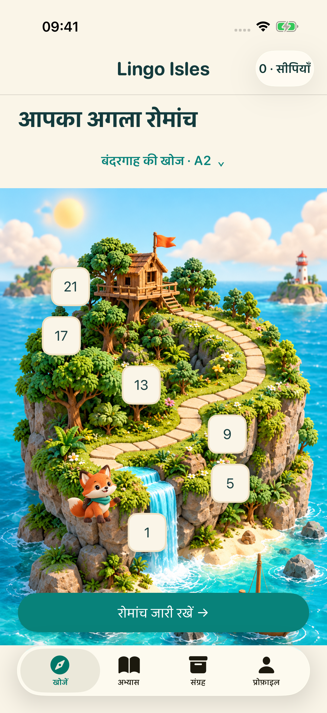
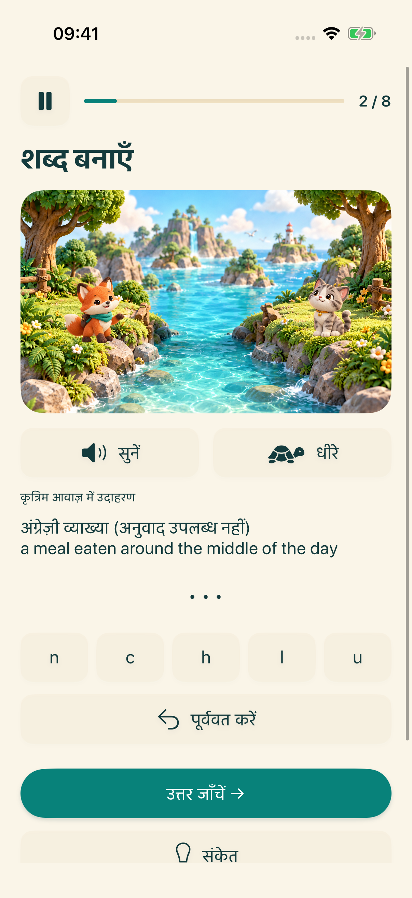
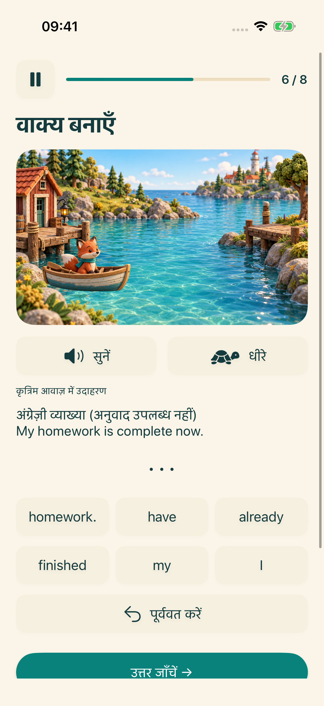
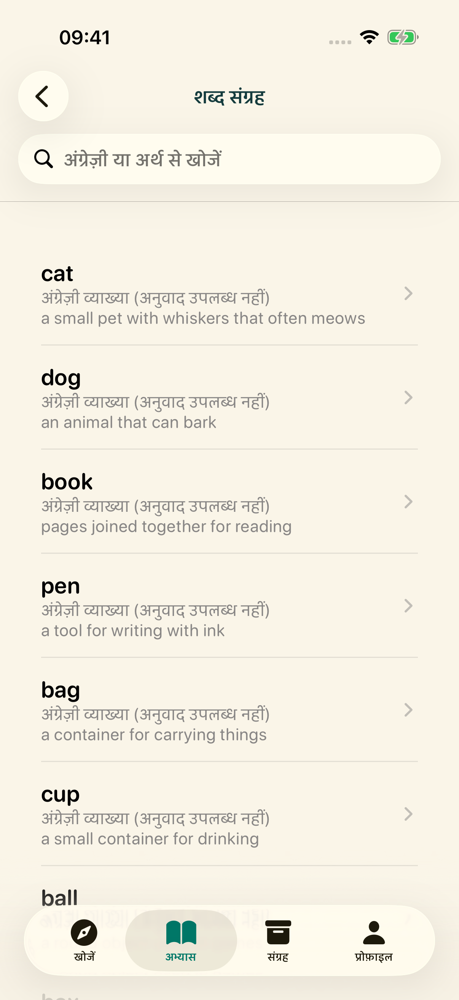

अगला द्वीप आपका इंतज़ार कर रहा है
सीखने का चरण चुनें और अंग्रेज़ी के छोटे-छोटे अभ्यास करते हुए आगे बढ़ें।
सीखने के चार द्वीपों पर निकलें। सुनें, शब्द बनाएँ, वाक्य जोड़ें और अपनी आवाज़ में बोलकर देखें — हर बार एक छोटी-सी नई खोज।
रोमांच की झलक देखेंiPhone और iPad पर लॉन्च की तैयारी में


सीखने का चरण चुनें और अंग्रेज़ी के छोटे-छोटे अभ्यास करते हुए आगे बढ़ें।

सिस्टम की आवाज़ सुनें और अक्षरों को क्रम में रखकर अंग्रेज़ी की वर्तनी का अभ्यास करें।

शब्दों को सही क्रम में रखें और समझें कि अंग्रेज़ी के वाक्य कैसे बनते हैं।

शब्द संग्रह देखें, पसंदीदा शब्द सहेजें और जो सीखा है उसे दोहराएँ।

रिकॉर्ड करें, फिर सुनें और दोबारा कोशिश करें। समर्थित डिवाइस पर वैकल्पिक रूप से आवाज़ को डिवाइस पर ही टेक्स्ट में बदला जा सकता है। यह अभ्यास है, उच्चारण की अंक-आधारित जाँच नहीं।
इंटरफ़ेस 16 भाषाओं में उपलब्ध है। सीखने की व्याख्याएँ अंग्रेज़ी और सरलीकृत चीनी में हैं। अन्य भाषाओं में अनुवाद उपलब्ध न होने पर अंग्रेज़ी व्याख्या स्पष्ट पहचान के साथ दिखाई जाती है।
सीखने की सामग्री और प्रगति आपके डिवाइस पर सहेजी जाती हैं। किसी खाते या डेवलपर द्वारा संचालित क्लाउड सिंक की ज़रूरत नहीं है। आवाज़ के संसाधन डिवाइस पर निर्भर करते हैं; विज्ञापन और निजता सेवाओं के लिए इंटरनेट कनेक्शन चाहिए।
18 वर्ष से कम उम्र वाली या बिना आयु वर्ग वाली प्रोफ़ाइल पर विज्ञापन प्रक्रिया शुरू नहीं होती। वयस्कों के लिए विज्ञापन निजता संबंधी विकल्पों और उपलब्धता पर निर्भर करते हैं। इनाम वाले विज्ञापन देखना वैकल्पिक है।